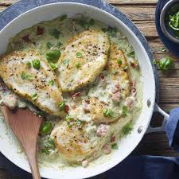

Pesto Chicken

Description
A popular recipe for a delicious pesto chicken dinner, as found on the Allrecipes website.
This is a quick one! It only requires about 10 min prep time and 25 min cook time.
Ingredients
- 4 skinless, boneless chicken breast halves
- 1⁄2 cup prepared basil pesto, divided
- 4 thin slices prosciutto, or more if needed
Steps
- Preheat oven to 400F. Grease a baking dish.
- Spred about 2 tbsp pesto over each chicken breast. Wrap each breast in prosciutto slices and place in dish.
- Bake in preheated oven until chicken no longer pink and prosciutto lightly crisped; about 25 min.